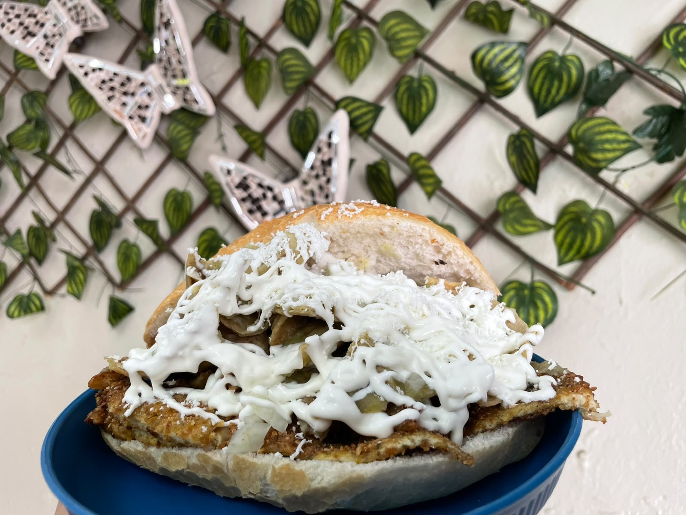
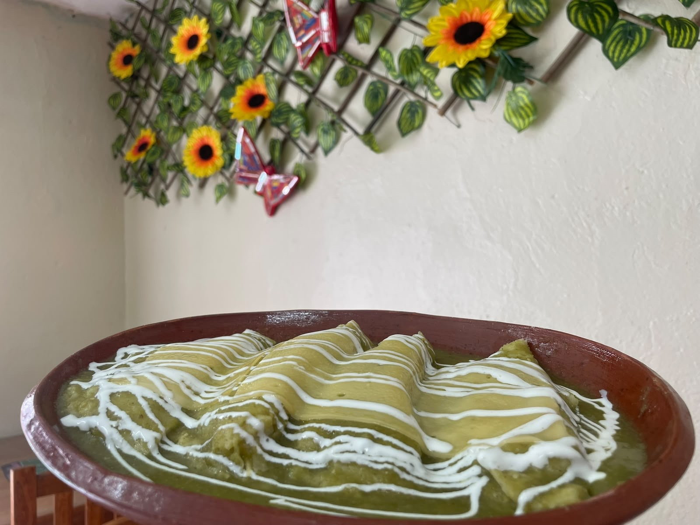
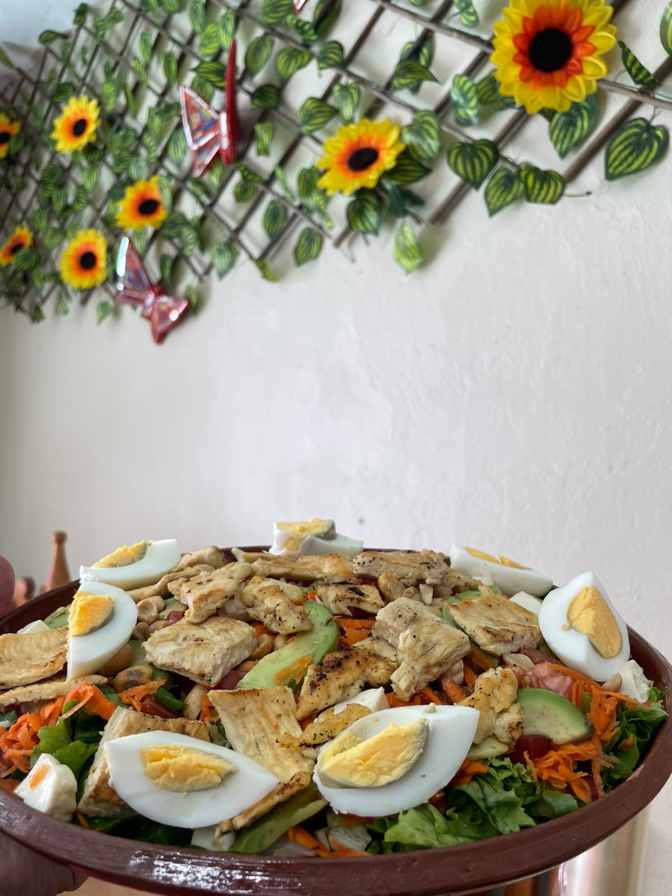
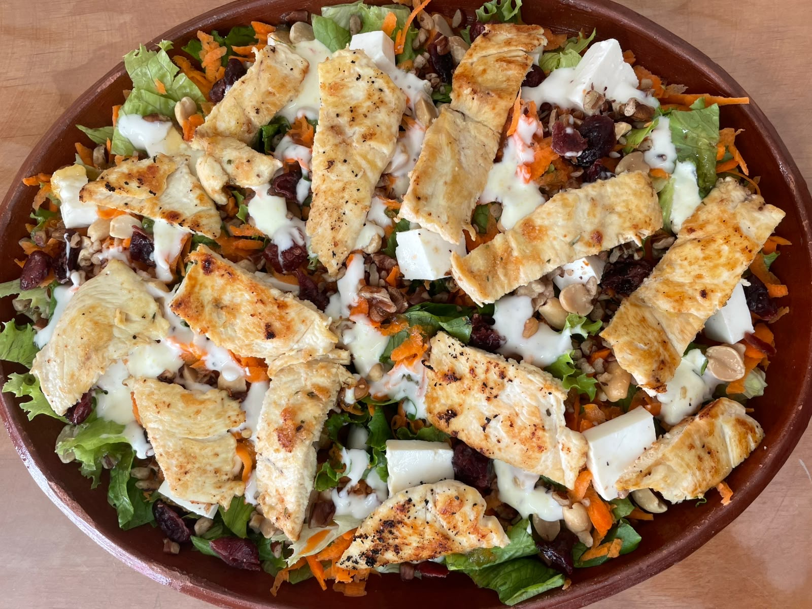
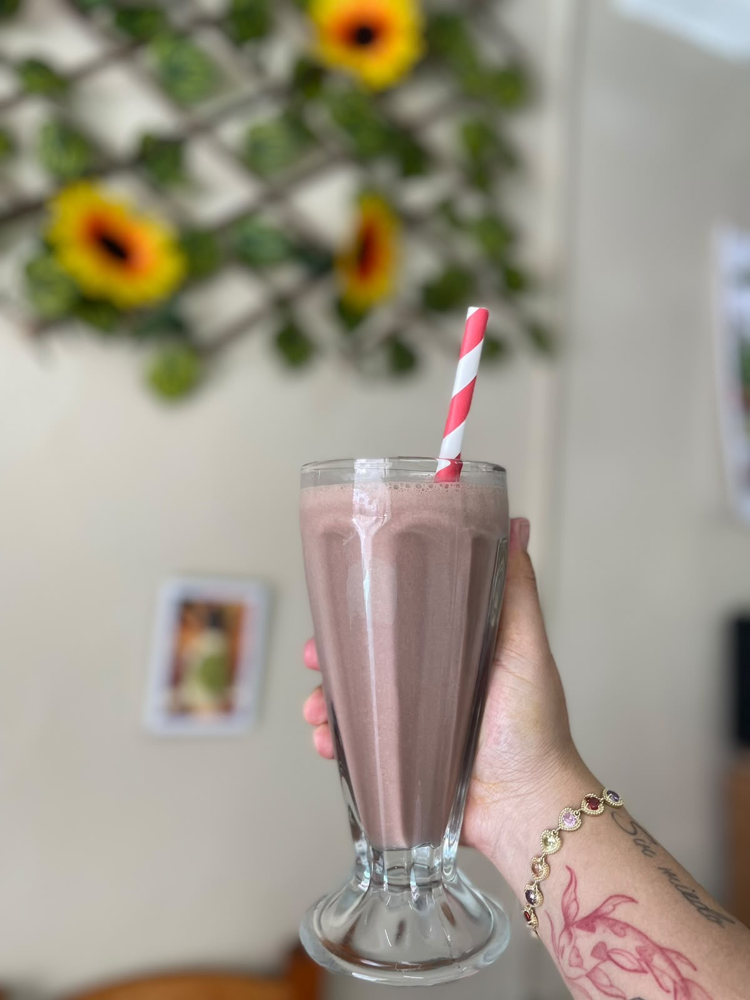

🌶️ Chilaquiles
Salsa roja o verde
- Sencillos$55
- Con Huevo$60
- Con Pollo$65
- Con Bistec$75
🥪 Sándwiches
- Jamón$30
- Salchicha$35
- Pechuga Asada$40
- Pechuga Empanizada$45

🥖 Tortas
- Jamón / Huevo$30
- Salchicha / Pechuga / Pierna$40
- Pechuga Empanizada$45
🌮 Tacos
Acompañados con papas a la francesa y nopales
- Bistec$30 c/u
- Pechuga$30 c/u
🌯 Burritos
- Jamón con Queso$60
- Pechuga$70
- Bistec con Queso$80

🍳 Antojitos y Platillos
- Banderilla de salchicha$25
- Hotcake$15 c/u
- Molletes (jamón, queso manchego, frijoles)$45
- Tacos dorados$60
- Enchiladas suizas$80
- Pechuga asada (platillo)$80
- Pechuga empanizada (platillo)$85
🥗 Ensaladas Nutritivas

Ensalada Valle$80
Incluye pechuga asada y aderezo a elección.

Ensalada Amor$80
Incluye pechuga asada, nuez, arándanos, miel y aderezo a elección.
Aderezo a tu elección: Chipotle, Ranch, Finas hierbas, Mil islas, César.

☕ Bebidas
Café de olla (Piloncillo)Chico $15 / Grande $20
Café con leche / cremaChico $15 / Grande $20
Té ManzanillaChico $10 / Grande $15
Té LimónChico $10 / Grande $15